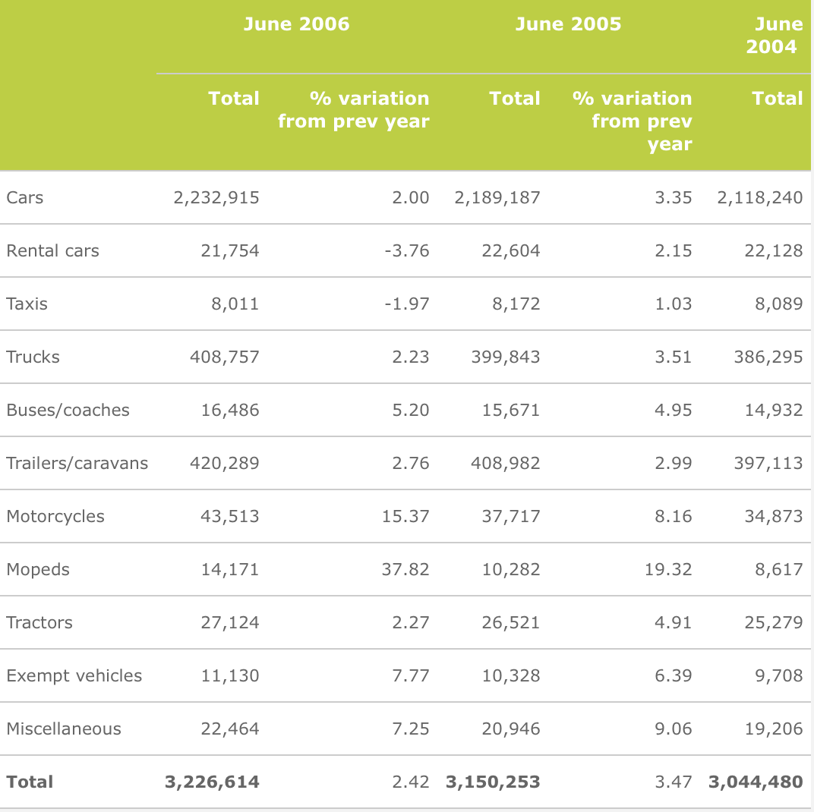

Car colours in New Zealand
The table below describes the colours of all cars registered in New Zealand in 2013.
Nobody reading the table would be interested in the final few digits of the values. Use the '-' button under the frequencies to reduce the number of significant digits displayed.
Showing the frequencies to the nearest thousand removes data noise from the table but retains all useful information.
In a similar way, round the proportions to 3 decimals — further digits do not help you to understand the data.
Finally click the Percentage checkbox to display percentages instead of proportions. This simply multiplies the proportions by 100, but it removes some of the leading zeros and therefore makes the values stand out better
Licensed vehicles in New Zealand
The next table was also published on the Land Transport New Zealand web site. It describes the types of vehicles licensed in June 2006 and the changes during the previous two years.

The last 2 or 3 digits of the counts are of little relevence to most policy makers or other readers of the table. These values could be made available in a separate appendix (or as a linked file in spreadsheet format), but most users would get the same information more clearly if the vehicle counts were given to the nearest thousand and the percentage changes were shown with a single decimal digit.
The table below also rearranges the columns to separate the columns of vehicle counts from the columns of percentage change. This makes it easier to compare related values.

It could be argued that one decimal digit should be shown for the category Taxis since the numbers are so small that they do not change when rounded to thousands. However the columns of percentage change adequately describe the differences between the years for these categories.